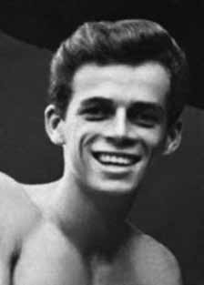

Stuart
Edgar
Angel
Jones
CIRCUNSTÂNCIAS DA MORTE
Stuart Angel iniciou sua militância política na Dissidência Estudantil do PCB da Guanabara, depois denominada MR-8, do qual se tornou dirigente em meados de 1969. Documentos da repressão política o apontam como participante de operações armadas. O relatório do inquérito policial militar (IPM) para investigar o sequestro do embaixador norte-americano Charles Burke Elbrick, contido na informação n o 511/70/S-102-S1-CIE do Centro de Informações do Exército (CIE), de 2 de março de 1970, acusa Stuart de participar do sequestro. Os agentes de informação identificam o estudante como “parte da Frente de Trabalho Armado responsável pelo sequestro do embaixador norteamericano”.i Stuart teve sua atuação como dirigente do MR-8 acompanhada pela ditadura até o momento de seu sequestro. Inúmeras prisões de militantes, ocorridas em maio de 1971, destacam as ações dos órgãos de repressão e informação na desarticulação das organizações opositoras, em especial a Vanguarda Popular Revolucionária (VPR) e o MR-8. Informação no 279/CISA-RJ, de 11 de maio de 1971, reporta a prisão de quatro integrantes das duas organizações: Zaqueu José Bento, Manoel Henrique Ferreira, José Roberto Gonçalves de Rezende e Amaro de Souza Braga.ii Outro documento do Centro de Informações de Segurança da Aeronáutica (CISA), o encaminhamento no 207/CISARJ, de 13 de maio de 1971, reforça o monitoramento desses grupos políticos ao reproduzir termo de declaração de Maria Cristina de Oliveira Ferreira, do MR-8.iii Supõe-se que as prisões de Stuart e de outros integrantes do MR-8 e da VPR estivessem ligadas ao fato de Carlos Lamarca, em abril de 1971, ter deixado a VPR e ingressado no MR-8. No início de maio de 1971, o CISA já sabia que Lamarca tinha ido para o MR-8 e queria capturá-lo de qualquer maneira, caso narrado no capítulo 13. José Roberto Gonçalves de Rezende, integrante da VPR, conforme a informação no 279/CISA-RJ, citada anteriormente, foi preso na noite de 7 de maio de 1971, em Copacabana, e levado do DOPS/RJ para as dependências do CISA na base aérea do Galeão. O livro de ocorrências no 16 (Ímpar) do DOPS/RJ, localizado no Arquivo Público do Estado do Rio de Janeiro, registra, na página 176, a detenção de Zaqueu José Bento e Manoel Henrique Ferreira, integrantes do Grupo Político-Militar do MR-8, em 7 de maio de 1971, no Rio de Janeiro. Documentos do DOPS/RJ confirmam também a prisão do militante da VPR José Roberto Gonçalves de Rezende na livraria Entre Rios, de Copacabana, na noite de 7 de maio. Alex Polari de Alverga foi preso em 12 de maio de 1971, conforme registrado na mesma data no livro de ocorrências no 19 do DOPS/RJ. Sob tortura, Polari forneceu aos agentes do CISA informações sobre encontro dele com Stuart Angel, e foi utilizado como “isca”. Relatos do próprio Polari e de Maria Cristina de Oliveira Ferreira dão conta de que Stuart foi barbaramente torturado até a morte pelos agentes do CISA, para que revelasse o paradeiro de Carlos Lamarca – o que não fez. Em depoimentos prestados à CNV no ano de 2014, Alex Polari e Maria Cristina afirmaram que em nenhum momento chegaram a ver o rosto de Stuart Angel enquanto estiveram presos na Base Aérea do Galeão. Ambos inferiram que Stuart estava preso no Galeão tendo em vista que lhes foi apresentado documento em nome de “Paulo”, com a fotografia de Stuart, perguntando se a pessoa na foto era Stuart Angel. Polari e Maria Cristina concordam ainda que, na mesma data em que a foto de Stuart foi apresentada, ouviram à noite gemidos de um homem sendo torturado que associaram a Stuart Angel, pois o agente do CISA que chefiava a equipe de interrogatório e tortura, Abílio Correa de Souza, disse no corredor da prisão: “Paulo, não fica aí reclamando, não. Vou te dar um Melhoral, uma injeção. Você vai ficar bom”. Em depoimentos prestados à CNV, agentes da Aeronáutica que atuaram na Base Aérea do Galeão no ano de 1971 afirmam que todos os presos políticos mantidos no presídio de civis do Galeão andavam todo o tempo encapuzados, com capuzes até o peito, o que impossibilitava a identificação visual dos demais presos. Informaram que, quando os presos políticos eram conduzidos para audiências em auditorias militares, existia um procedimento de dissimulação do local onde se encontravam, que consistia em dar voltas com presos encapuzados em lanchas ou aviões para que se desorientassem e não reconhecessem o local de onde saíram, impedindo que seus familiares e advogados soubessem onde se encontravam presos. Esses mesmos agentes relataram que presos políticos eram transferidos da Base do Galeão para a Base Aérea de Santa Cruz encapuzados, e o comentário de um deles à CNV foi que “quem ia para Santa Cruz não voltava”. Em depoimento escrito quando se encontrava preso no Rio de Janeiro, em 1976, e encaminhado ao cardeal-arcebispo de São Paulo, d. Paulo Evaristo Arns, Manoel Henrique Ferreira, falecido em 2014, relata: Dias após minha prisão, quando passava pela fase de torturas, na quinta ou sextafeira (não sei precisar o dia exato, pois devido às condições em que me encontrava, tinha perdido a noção do tempo), fiquei sabendo, pelo “dr. Pascoal” (tenente-coronel Abílio Alcântara) que Stuart havia sido preso. Pela tarde “dr. Pascoal” abre a cela e me mostra uma carteira de identidade, para ver se eu conhecia a pessoa que tinha ali sua fotografia. […] Ele, tenente-coronel Abílio Alcântara, deu um pequeno sorriso e disse que Stuart se encontrava […]; que o haviam prendido naquele dia. […] Logo após, de minha cela ouvi um intenso barulho no pátio, uma grande movimentação, gritos e barulho de motores de carros que saíam apressados. À noite, veio um médico, acompanhado pelo tenente-coronel Muniz (“dr. Luiz”) visitando todas as celas. Este, ao chegar à minha cela, pergunta-me se eu já sabia que o Stuart estava preso. Ante minha resposta afirmativa ele fala-me que naquela noite ia entrar outro “peixe grande”. Mais tarde, fui levado para a cela da equipe de análises, onde se encontravam os brigadeiros João Paulo Burnier e Carlos Affonso Dellamora, que logo se retiraram, e outros dois indivíduos da equipe de análise, o “dr. Pedro Paulo” e outro oficial que não sei o nome. Estes dois fizeram-me sentar e disseram que o Stuart estava preso, que haviam recolhido algum material em seu aparelho e queriam algumas informações […] Antes de me mandar de volta para a cela, o “dr. Pedro Paulo” ainda me disse que “agora que pegamos Stuart, em dois dias chegaremos ao capitão Lamarca”. Quando de volta à cela, percebi que em uma delas, que ficava próxima à entrada do corredor, havia alguém gemendo muito e às vezes gritava. […] que pela madrugada se interromperam. Logo depois houve uma grande balbúrdia pelo corredor. Abriram uma cela e ouvi claramente quando alguém pediu que trouxessem um tapete. Depois cessou a movimentação e não voltei a ouvir mais os gemidos.iv Carta de Alex Polari de 23 de maio de 1972, enviada a Zuzu Angel para que ela tivesse a confirmação da morte do filho, narra a queda de Stuart Angel: Na manhã do dia 14 de maio de 1971, tinha sido levado, após dois dias de tortura, a uma região no Grajaú, próximo à avenida 28 de Setembro, onde tinha um encontro. Nos interrogatórios pude despistar o horário do encontro (que seria às 10h) como sendo às 8h e num local um pouco mais afastado. Porém às 9h, quando já me retiravam do local (carregado praticamente, pois não podia na época andar sozinho, devido a um problema nas pernas), Stuart entrou inadvertidamente nas proximidades do cerco, sendo detectado pelo esquema militar que tinha sido montado em muitos quarteirões à volta. Tinha passado de carro (um VW verde), estacionando, tendo sido reconhecido e preso pelos agentes quando passava perto de onde me encontrava, apesar de que o esquema e o cerco estivessem se desmobilizando naquele momento. Dessa maneira, presenciei sua prisão.v No trecho seguinte, Polari descreve o instante da prisão do companheiro: Stuart, quando caiu, portava uma calça verde-garrafa, camisa clara e um casaco bege. Foi colocado em um porta-malas de um Opala amarelo com teto de vinil preto e levado para a Base Aérea do Galeão, onde se localiza o CISA. Não me levaram juntamente com ele, pois passei o resto da manhã e boa parte da tarde sendo levado aos locais de outros encontros fictícios, no término dos quais retornei novamente ao “Paraíso” (nome-código do CISA) ao entardecer, indo direto para a sala de tortura no andar térreo.vi Sobre as torturas que sofreu por agentes do CISA, do Cenimar e do CIE, em depoimento no dia 12 de setembro de 2014, Polari afirmou à CNV: Na parte mais dura dessa chegada, desses dias, estava o Mike, Poeck ou não Poeck, que seja. E lá, as pessoas do CISA, tinha um suboficial que era até pouco tempo reconhecido como Abílio Alcântara, que era o chefe, o prático da tortura. Tinha mais algumas pessoas que eu tomei contato. Tinha o capitão que era o mais analista de informação, que depois em outras oportunidades me chamou para também um interrogatório, uma conversa, era o bonzinho, Lúcio Barroso. E tinha mais outros que apareceram, apareceram no CISA na época que eu estive lá. Apareceu o dr. Bruno, que era o homem do CIE que supostamente foi um dos dirigentes da Casa da Morte, muito educado, com um terno muito bonito, psicopata clássico. Aliás, não devia nem mencionar.vii O então capitão-aviador Lúcio Valle Barroso, hoje coronel reformado, é o único dos oficiais da Aeronáutica identificados por Alex Polari entre os envolvidos nas atrocidades cometidas contra Stuart Angel que continua vivo. Sua presença entre os agentes do CISA, com codinome “dr. Celso”, foi denunciada por Alex Polari em processos, como o no 89/1971-T, da 1a Auditoria da Aeronáutica. Era formado em inteligência militar para oficiais na Escola das Américas, no Panamá, que frequentou de janeiro a abril de 1970. Barroso, em depoimento à CNV em 9 de junho de 2014, declarou não ter tido nenhum envolvimento no caso de Stuart Angel e desconhecer a existência da prisão e das práticas de tortura na Base Aérea do Galeão, apesar das inúmeras acusações. Contudo, afirma ter conhecido integrantes do CISA, como Carlos Afonso Dellamora, Ferdinando Muniz de Farias e Abílio Correa de Souza, que ele chamava como “Abílio Alcântara”.viii Matéria do jornal O Globo (“Stuart Angel: verdadeiro nome do principal torturador é descoberto”) já havia denunciado o nome real do suboficial Abílio Alcântara, codinome “dr. Pascoal”, que na verdade era o Suboficial Abílio Correa de Souza, já morto. Outros nomes de agentes citados em documentos ou por testemunhos constam no registro n o 710 do livro de ocorrências no 19 do DOPS/RJ, relativo à prisão de Alex Polari: os dos agentes do DOPS Theobaldo Lisbôa, Nilton Vieira de Mello, Milton Rezende Almeida, Eduardo Teixeira Sobrinho e Jair Gonçalves da Mota. Os dois últimos haviam sido denunciados por Alex Polari na carta a Zuzu Angel que ele escreveu na prisão no ano de 1972.ix O capitão da aeronáutica reformado Álvaro Moreira de Oliveira Filho, em depoimento à CNV em 17 de fevereiro de 2014, em Salvador, contou que o sargento da Aeronáutica José do Nascimento Cabral, já falecido, havia em duas ocasiões comentado com ele a respeito de episódio que viveu enquanto servia na Base Aérea de Santa Cruz.x De acordo com o sargento José do Nascimento, a Base Aérea de Santa Cruz teria recebido visita noturna de grupo de oficiais comandado pelo brigadeiro João Paulo Moreira Burnier, que ordenou o fechamento da pista. José do Nascimento teve conhecimento da ordem do brigadeiro Burnier por estar de plantão naquela noite na torre de controle, de onde pôde observar, na cabeceira da pista, enterro de cadáver de pessoa que, como posteriormente soube, havia sido morta na Base Aérea do Galeão. À época, os colegas de José do Nascimento Cabral na Base Aérea de Santa Cruz presumiram tratar-se do corpo de Stuart Edgar Angel Jones. Segundo José do Nascimento, a cabeceira da pista era local de difícil acesso, pouco frequentado pelos militares que serviam na base. Ainda segundo o sargento Nascimento, um dos oficiais que acompanhavam o brigadeiro João Paulo Moreira Burnier nessa oportunidade seria o então comandante da Base Aérea do Galeão. Em novo depoimento à CNV, em 6 de junho de 2014, o capitão reformado Álvaro Moreira de Oliveira Filho reiterou o que havia declarado anteriormente a respeito da ocultação do cadáver de Stuart Angel na Base Aérea de Santa Cruz.xi Na lista de servidores civis e militares lotados na Base Aérea de Santa Cruz em maio de 1971, mês do desaparecimento de Stuart Angel, fornecida pelo Ministério da Defesa, figura o nome do terceiro-sargento José do Nascimento. A CNV também solicitou à Defesa informações sobre eventuais obras de reforma, ampliação e modificação nas pistas da Base Aérea de Santa Cruz, e recebeu como resposta conjunto de documentos sobre obras e alterações realizadas no local de 1974 a 1978, por duas empresas de engenharia. Em março de 2014, a CNV recebeu novas informações de ex-militar da Aeronáutica, que servia na Base Aérea de Santa Cruz no ano de 1971 (cuja identidade será preservada nos termos da lei que criou a CNV), que reforçam ter sido a Base Aérea de Santa Cruz utilizada no início da década de 1970 para a prisão ilegal e tortura de presos políticos, e também como instrumento para a ocultação de seus cadáveres.xii Em depoimento à CNV em 11 de novembro de 2014, o referido oficial identificou fotografia de Stuart Edgar Angel Jones como sendo o preso que protegeu de um espancamento por policiais da Aeronáutica durante uma refeição no xadrez da Base Aérea de Santa Cruz. Nesse depoimento, o ex-militar relata que se sentou ao lado do preso que seria Stuart Angel, que estava muito magro e pálido. Este foi o único momento em que a testemunha teria visto Stuart Angel. Ainda nesse relato, o ex-militar afirmou ter sido ameaçado por seus superiores de que poderia ser enterrado no mandiocal próximo às regiões de mangue existentes na Base Aérea de Santa Cruz. Esse mesmo ex-militar relata que era comum o comentário, na Base Aérea de Santa Cruz, acerca do lançamento em alto-mar de cadáveres transportados pelos aviões P-16. O desaparecimento de Stuart é dos mais conhecidos da Ditadura Militar, pelas seguidas denúncias de sua mãe, a estilista Zuzu Angel. A forte pressão internacional resultou, em 15 de março de 1972, no afastamento de Burnier, dos coronéis-aviadores Roberto Hipólito da Costa, Carlos Affonso Dellamora e Márcio César Leal Coqueiro e de outros três oficiais, além da demissão do ministro da Aeronáutica, Márcio de Souza e Mello. A partir desse momento, porém, o regime militar passou a negar formal e ostensivamente a prisão de Stuart, o que se observa em vários documentos dos órgãos de informação, como no depoimento de Paulo Roberto Jabur ao CISA, registrado no informe no 0213, de 24 de julho de 1972, no qual Stuart aparece como “foragido”, além de afirmar que “Paulo” (codinome de Stuart) teria participado de seis ações armadas de expropriação.xiii Documento de abril de 1973, com intuito de monitorar a atuação de jornalistas de O Globo, foi encaminhado pelo I Exército ao SNI. Entre os profissionais vigiados estava Hildegard Angel, irmã de Stuart.xiv Documentos do Arquivo Nacional localizados em 2013 por jornalistas de O Globo revelaram, no entanto, que a morte de Stuart Angel era tida como certa pelos serviços de informação da ditadura. O informe confidencial no 1.008 da agência Rio de Janeiro do SNI, de 14 de setembro de 1971, tem como assunto: “Stuart Angel Jones – Falecido”. Na Informação no 4.057, da agência São Paulo do SNI, de 11 de setembro de 1975, o nome de Stuart aparece junto a outros nomes de militantes mortos, acompanhados das respectivas datas de morte. No caso de Stuart, o dia indicado é 16 de maio de 1971.xv Em oitiva domiciliar à CNV, em 30 de julho de 2014, o ex-comandante da Base Aérea do Galeão em 1971 e 1972, brigadeiro Jorge José de Carvalho, não forneceu nenhuma informação que permitisse esclarecer as circunstâncias da prisão ou da morte de Stuart Angel Jones. No entanto, o coronel Antônio da Motta Paes Júnior, que o sucedeu no comando da base em 1973 e 1974, admitiu em depoimento prestado à CNV, em 30 de julho de 2014, a existência de uma unidade do CISA no Galeão e indicou que havia recebido ordens superiores para não se imiscuir com esse grupo. Ary Casaes Bezerra Cavalcanti, comandante da Base Aérea de Santa Cruz de 1970 a 1972, foi convocado para prestar depoimento na CNV, mas não compareceu, alegando problemas de saúde. Luciano José Marinho de Melo, cabo que servia na Base Aérea do Galeão à mesma época do desaparecimento de Stuart, admitiu, em depoimento à CNV prestado em 1o de agosto de 2014, ter levado a presa política Maria Cristina de Oliveira Ferreira para que ela fizesse a certidão de nascimento de seu filho no ano de 1972. Verificadas inconsistências dos depoimentos tomados de Alex Polari, Maria Cristina de Oliveira Ferreira e Alexandre Lyra de Oliveira em 2014 pela CNV no tocante à morte de Stuart na Base Aérea do Galeão, e tendo em vista os novos fatos trazidos por ex militares que atestaram o cárcere e provável ocultação do cadáver de Stuart na Base Aérea de Santa Cruz, trilhou-se nova linha de investigação visando a busca de indícios sobre práticas de ocultação de cadáveres na Base de Santa Cruz. Nesse sentido, foram pesquisadas a ocorrências de alterações nas pistas de pouso, ou próximas dessas, que indicassem práticas relacionadas à possível ocultação de cadáveres. A CNV constatou a realização de obras de ampliação das referidas pistas, entre os anos de 1976 e 1978. Foram realizadas pesquisas acerca da eventual existência de ocorrências policiais relacionadas ao encontro de cadáveres no local das obras da Base Aérea de Santa Cruz ou em outras obras realizadas pela mesma construtora na cidade do Rio de Janeiro que pudessem caracterizar eventual translado de restos mortais. Em pesquisa efetuada junto ao acervo fotográfico da Polícia Civil do Rio de Janeiro, foi localizada em um dos canteiros de obra da construtora CETENCO, responsável pelas reformas na Base Aérea de Santa Cruz no ano de 1976, a foto de um crânio – relacionada a ocorrência policial de investigação sobre o encontro de ossadas em obra no centro do Rio de Janeiro – cujas características do crânio e de outros elementos circunstanciais levaram a CNV a encaminhar o material fotográfico localizado para análise comparativa craniofacial no Centro de Ciências Forenses da Universidade de Northumbria em Newcastle, Inglaterra. A conclusão da análise pericial indicou que há, de modo geral, clara correspondência morfológica craniofacial entre as imagens ante mortem de Stuart Angel e post mortem da ossada cuja fotografia foi localizada pela CNV. Embora não tenha sido possível uma identificação definitiva, o perito Martin Paul Evison não encontrou elementos que excluíssem a possibilidade da fotografia do crânio examinada ser de Stuart Edgard Angel Jones. No momento de fechamento desse Relatório, a CNV segue realizando pesquisas em arquivos policiais com vistas ao esclarecimento do destino final de Stuart Angel e à localização e identificação de seus restos mortais.
Stuart Angel began his political activism in the Student Dissidence of the Guanabara PCB, later called MR-8, of which he became a leader in mid-1969. Documents from political repression indicate him as a participant in armed operations. The report of the military police inquiry (IPM) to investigate the kidnapping of US ambassador Charles Burke Elbrick, contained in information no. 511/70/S-102-S1-CIE from the Army Information Center (CIE), dated March 2, 1970, accuses Stuart of participating in the kidnapping. Information agents identify the student as “part of the Armed Labor Front responsible for the kidnapping of the North American ambassador”.i Stuart's role as leader of the MR-8 was monitored by the dictatorship until the moment of his kidnapping. Numerous arrests of militants, which took place in May 1971, highlight the actions of repression and information bodies in dismantling opposition organizations, especially the Vanguarda Popular Revolucionária (VPR) and MR-8. Information no. 279/CISA-RJ, dated May 11, 1971, reports the arrest of four members of the two organizations: Zaqueu José Bento, Manoel Henrique Ferreira, José Roberto Gonçalves de Rezende and Amaro de Souza Braga.ii Another document from the Aeronautics Security Information Center (CISA), referral no. 207/CISARJ, dated May 13, 1971, reinforces the monitoring of these political groups by reproducing a statement by Maria Cristina de Oliveira Ferreira, from MR-8.iii It is assumed that the arrests of Stuart and other members of MR-8 and VPR were linked to the fact that Carlos Lamarca, in April 1971, left VPR and joined MR-8. At the beginning of May 1971, CISA already knew that Lamarca had gone to MR-8 and wanted to capture him anyway, a case narrated in chapter 13. José Roberto Gonçalves de Rezende, a member of the VPR, according to information no. CISA at Galeão air base. Occurrence book no. 16 (Ímpar) of the DOPS/RJ, located in the Public Archives of the State of Rio de Janeiro, records, on page 176, the arrest of Zaqueu José Bento and Manoel Henrique Ferreira, members of the MR-8 Political-Military Group, on May 7, 1971, in Rio de Janeiro. DOPS/RJ documents also confirm the arrest of VPR activist José Roberto Gonçalves de Rezende in the Entre Rios bookstore, in Copacabana, on the night of May 7th. Alex Polari de Alverga was arrested on May 12, 1971, as recorded on the same date in incident book number 19 of the DOPS/RJ. Under torture, Polari provided CISA agents with information about his meeting with Stuart Angel, and was used as “bait”. Reports from Polari himself and Maria Cristina de Oliveira Ferreira state that Stuart was savagely tortured to death by CISA agents, so that he could reveal the whereabouts of Carlos Lamarca – which he did not do. In statements given to the CNV in 2014, Alex Polari and Maria Cristina stated that they never saw Stuart Angel's face while they were imprisoned at the Galeão Air Base. Both inferred that Stuart was imprisoned at Galeão given that they were presented with a document in the name of “Paulo”, with Stuart’s photograph, asking if the person in the photo was Stuart Angel. Polari and Maria Cristina also agree that, on the same date that Stuart's photo was presented, they heard moans at night of a man being tortured which they associated with Stuart Angel, as the CISA agent who headed the interrogation and torture team, Abílio Correa de Souza, said in the prison corridor: "Paulo, don't just sit there complaining. I'm going to give you a Melhoral, an injection. You're going to be fine." In statements given to the CNV, Air Force agents who worked at the Galeão Air Base in 1971 stated that all political prisoners held in the Galeão civilian prison were hooded at all times, with hoods reaching up to their chests, which made visual identification of the other prisoners impossible. They reported that, when political prisoners were taken to hearings in military audits, there was a procedure for concealing the location where they were, which consisted of taking hooded prisoners around in speedboats or planes so that they became disoriented and did not recognize the place from which they came, preventing their families and lawyers from knowing where they were being held. These same agents reported that political prisoners were transferred from the Galeão Base to the Santa Cruz Air Base wearing hoods, and one of them commented to the CNV that “those who went to Santa Cruz didn't come back”. In a statement written when he was arrested in Rio de Janeiro, in 1976, and sent to the cardinal-archbishop of São Paulo, d. Paulo Evaristo Arns, Manoel Henrique Ferreira, who died in 2014, reports: Days after my arrest, when I was going through the torture phase, on Thursday or Friday (I don't know how to specify the exact day, because due to the conditions I found myself in, I had lost track of time), I found out, from “Dr. Pascoal” (Lieutenant Colonel Abílio Alcântara) that Stuart had been arrested. In the afternoon “Dr. Pascoal” opens the cell and shows me an identity card, to see if I knew the person who had his photograph there. […] He, Lieutenant Colonel Abílio Alcântara, gave a small smile and said that Stuart was there […]; who had arrested him that day. […] Soon after, from my cell I heard an intense noise in the courtyard, a lot of movement, screams and the noise of car engines rushing out. At night, a doctor came, accompanied by Lieutenant Colonel Muniz (“Dr. Luiz”), visiting all the cells. When he arrived at my cell, he asked me if I already knew that Stuart was in prison. After my affirmative answer, he told me that that night another “big fish” was going to come in. Later, I was taken to the analysis team's cell, where there were Brigadiers João Paulo Burnier and Carlos Affonso Dellamora, who soon left, and two other individuals from the analysis team, “Dr. Pedro Paulo” and another officer whose name I don't know. These two made me sit down and said that Stuart was under arrest, that they had collected some material in his device and wanted some information […] Before sending me back to the cell, “Dr. Pedro Paulo” even told me that “now that we caught Stuart, in two days we will reach Captain Lamarca”. When I returned to the cell, I noticed that in one of them, which was close to the entrance to the corridor, there was someone moaning a lot and sometimes screaming. […] that at dawn they interrupted. Soon after there was a great commotion in the corridor. They opened a cell and I clearly heard someone asking them to bring a rug. Then the movement stopped and I never heard the moans again.iv Letter from Alex Polari dated May 23, 1972, sent to Zuzu Angel so that she could have confirmation of her son's death, narrates Stuart Angel's fall: On the morning of May 14, 1971, he had been taken, after two days of torture, to an area in Grajaú, close to Avenida 28 de Setembro, where he had a meeting. During the interrogations, I was able to mislead the meeting time (which would be at 10am) as being at 8am and in a slightly more remote location. However, at 9 am, when I was already leaving the place (practically loaded, as I couldn't walk alone at the time, due to a problem with my legs), Stuart inadvertently entered the vicinity of the siege, being detected by the military scheme that had been set up in many blocks around. I had passed by in a car (a green VW), parking, having been recognized and arrested by the agents when I was passing by, despite the fact that the scheme and the siege were demobilizing at that moment. In this way, I witnessed his arrest.v In the following excerpt, Polari describes the moment of his companion's arrest: Stuart, when he fell, was wearing bottle green pants, a light shirt and a beige coat. It was placed in the trunk of a yellow Opala with a black vinyl roof and taken to Galeão Air Base, where CISA is located. They didn't take me with him, as I spent the rest of the morning and a good part of the afternoon being taken to the locations of other fictitious meetings, at the end of which I returned again to “Paradise” (CISA's code name) at dusk, going straight to the torture room on the ground floor. On the arrival of those days, there was Mike, Poeck or not Poeck, whatever. And there, the people at CISA, there was a non-commissioned officer who was until recently recognized as Abílio Alcântara, who was the chief, the torture practitioner. There were a few more people that I contacted. There was the captain who was the most information analyst, who later on other occasions called me for an interrogation, a conversation, he was the good guy, Lúcio Barroso. And there were others who appeared, appeared at CISA at the time I was there. Dr. appeared. Bruno, who was the man from the CIE who was supposedly one of the leaders of the House of Death, very polite, with a very nice suit, classic psychopath. In fact, it shouldn't even be mentioned.vii The then aviator captain Lúcio Valle Barroso, now a retired colonel, is the only one of the Air Force officers identified by Alex Polari among those involved in the atrocities committed against Stuart Angel who is still alive. His presence among CISA agents, codenamed “Dr. Celso”, was denounced by Alex Polari in processes, such as number 89/1971-T, of the 1st Air Force Audit. He graduated in military intelligence for officers at the Escola das Américas, in Panama, which he attended from January to April 1970. Barroso, in a statement to the CNV on June 9, 2014, declared that he had no involvement in the case of Stuart Angel and was unaware of the existence of the prison and torture practices at the Galeão Air Base, despite the numerous accusations. However, he claims to have met members of CISA, such as Carlos Afonso Dellamora, Ferdinando Muniz de Farias and Abílio Correa de Souza, who he called “Abílio Alcântara”. Souza, already dead. Other names of agents mentioned in documents or in testimonies appear in record number 710 of the DOPS/RJ occurrence book number 19, relating to the arrest of Alex Polari: those of DOPS agents Theobaldo Lisbôa, Nilton Vieira de Mello, Milton Rezende Almeida, Eduardo Teixeira Sobrinho and Jair Gonçalves da Mota. The last two had been denounced by Alex Polari in the letter to Zuzu Angel that he wrote in prison in 1972. Cruz.x According to Sergeant José do Nascimento, the Santa Cruz Air Base received a nighttime visit from a group of officers commanded by Brigadier João Paulo Moreira Burnier, who ordered the runway to be closed. José do Nascimento was aware of Brigadier Burnier's order because he was on duty that night in the control tower, from where he was able to observe, at the head of the runway, the burial of the body of a person who, as he later learned, had been killed at the Galeão Air Base. At the time, José do Nascimento Cabral's colleagues at the Santa Cruz Air Base assumed it was the body of Stuart Edgar Angel Jones. According to José do Nascimento, the head of the runway was a difficult to access place, little frequented by the soldiers who served at the base. Also according to Sergeant Nascimento, one of the officers who accompanied Brigadier João Paulo Moreira Burnier on that occasion would be the then commander of the Galeão Air Base. In a new statement to the CNV, on June 6, 2014, retired captain Álvaro Moreira de Oliveira Filho reiterated what he had previously stated regarding the hiding of Stuart Angel's body at the Santa Cruz Air Base. The CNV also asked the Defense for information on possible renovation, expansion and modification works on the runways at Santa Cruz Air Base, and received in response a set of documents on works and changes carried out at the site from 1974 to 1978, by two engineering companies. In March 2014, the CNV received new information from a former Air Force soldier, who served at the Santa Cruz Air Base in 1971 (whose identity will be preserved under the terms of the law that created the CNV), which reinforces that the Santa Cruz Air Base was used in the early 1970s for the illegal arrest and torture of political prisoners, and also as an instrument for hiding their bodies.xii In a statement to the CNV on 11 November 2014, the aforementioned officer identified a photograph of Stuart Edgar Angel Jones as the prisoner he protected from a beating by Air Force police officers during a meal at the Santa Cruz Air Base plaza. In this statement, the ex-soldier reports that he sat next to the prisoner who would be Stuart Angel, who was very thin and pale. This was the only time the witness would have seen Stuart Angel. Still in this report, the former soldier stated that he was threatened by his superiors that he could be buried in the cassava plantation near the mangrove regions at Santa Cruz Air Base. This same ex-soldier reports that comments were common at the Santa Cruz Air Base about the throwing into the high seas of corpses transported by P-16 planes. Stuart's disappearance is one of the most well-known of the Military Dictatorship, due to the repeated complaints made by his mother, the fashion designer Zuzu Angel. Strong international pressure resulted, on March 15, 1972, in the dismissal of Burnier, the aviator colonels Roberto Hipólito da Costa, Carlos Affonso Dellamora and Márcio César Leal Coqueiro and three other officers, in addition to the dismissal of the Minister of Aeronautics, Márcio de Souza e Mello. From that moment on, however, the military regime began to formally and blatantly deny Stuart's arrest, which can be seen in several documents from the intelligence agencies, such as Paulo Roberto Jabur's statement to CISA, recorded in report no. 0213, dated July 24, 1972, in which Stuart appears as a “fugitive”, in addition to stating that “Paulo” (Stuart's codename) had participated in six armed actions of expropriation.xiii Document from April 1973, with the aim of monitoring the activities of O Globo journalists, it was forwarded by the 1st Army to the SNI. Among the professionals monitored was Hildegard Angel, Stuart's sister.xiv Documents from the National Archives located in 2013 by journalists from O Globo revealed, however, that Stuart Angel's death was taken for granted by the dictatorship's information services. Confidential report No. 1,008 from the Rio de Janeiro agency of the SNI, dated September 14, 1971, has the subject: “Stuart Angel Jones – Deceased”. In Information No. 4,057, from the São Paulo agency of the SNI, dated September 11, 1975, Stuart's name appears alongside other names of dead militants, accompanied by their respective dates of death. In Stuart's case, the day indicated is May 16, 1971.xv In a home interview with the CNV, on July 30, 2014, the former commander of Galeão Air Base in 1971 and 1972, Brigadier Jorge José de Carvalho, did not provide any information that would allow clarifying the circumstances of Stuart Angel Jones' arrest or death. However, Colonel Antônio da Motta Paes Júnior, who succeeded him in command of the base in 1973 and 1974, admitted in a statement given to the CNV, on July 30, 2014, the existence of a CISA unit in Galeão and indicated that he had received superior orders not to interfere with this group. Ary Casaes Bezerra Cavalcanti, commander of the Santa Cruz Air Base from 1970 to 1972, was summoned to give a statement to the CNV, but did not appear, citing health problems. Luciano José Marinho de Melo, a corporal who served at the Galeão Air Base at the same time as Stuart's disappearance, admitted, in a statement to the CNV given on August 1, 2014, that he took political prisoner Maria Cristina de Oliveira Ferreira so that she could obtain her son's birth certificate in 1972. Inconsistencies were found in the statements taken from Alex Polari, Maria Cristina de Oliveira Ferreira and Alexandre Lyra de Oliveira in 2014 by the CNV regarding the death of Stuart at the Galeão Air Base, and in view of the new facts brought by ex-military personnel who attested to the imprisonment and probable concealment of Stuart's corpse at the Santa Cruz Air Base, a new line of investigation was followed aiming to search for evidence on the practices of hiding bodies at the Santa Cruz Base. In this sense, occurrences of changes on or near landing strips that indicated practices related to the possible concealment of corpses were investigated. The CNV found that works were carried out to expand the aforementioned runways, between 1976 and 1978. Research was carried out into the possible existence of police incidents related to the finding of bodies at the construction site of the Santa Cruz Air Base or in other works carried out by the same construction company in the city of Rio de Janeiro that could characterize the possible transfer of mortal remains. In research carried out with the photographic collection of the Civil Police of Rio de Janeiro, a photo of a skull was located on one of the construction sites of the construction company CETENCO, responsible for the renovations at the Santa Cruz Air Base in 1976 - related to the police investigation into the finding of bones at work in the center of Rio de Janeiro - whose characteristics of the skull and other circumstantial elements led the CNV to forward the photographic material located for comparative craniofacial analysis at the Center. of Forensic Science at Northumbria University in Newcastle, England. The conclusion of the expert analysis indicated that there is, in general, a clear craniofacial morphological correspondence between the ante-mortem images of Stuart Angel and the post-mortem of the bone whose photograph was located by the CNV. Although a definitive identification was not possible, expert Martin Paul Evison did not find elements that would exclude the possibility that the photograph of the skull examined was that of Stuart Edgard Angel Jones. At the time of closing this Report, the CNV continues to carry out research in police files with a view to clarifying Stuart Angel's final fate and locating and identifying his remains.
Stuart Angel inició su activismo político en la Disidencia Estudiantil del PCB de Guanabara, luego llamada MR-8, de la que se convirtió en dirigente a mediados de 1969. Documentos de represión política lo señalan como participante en operaciones armadas. El informe de la investigación de la policía militar (IPM) para investigar el secuestro del embajador estadounidense Charles Burke Elbrick, contenido en la información núm. 511/70/S-102-S1-CIE del Centro de Información del Ejército (CIE), de 2 de marzo de 1970, acusa a Stuart de participar en el secuestro. Agentes de información identifican al estudiante como “parte del Frente Armado de Trabajo responsable del secuestro del embajador norteamericano”.i El papel de Stuart como líder del MR-8 fue vigilado por la dictadura hasta el momento de su secuestro. Numerosas detenciones de militantes, ocurridas en mayo de 1971, ponen de relieve las acciones de los órganos de represión e información en el desmantelamiento de organizaciones de oposición, especialmente la Vanguarda Popular Revolucionária (VPR) y el MR-8. Información no. 279/CISA-RJ, de 11 de mayo de 1971, informa sobre la detención de cuatro miembros de las dos organizaciones: Zaqueu José Bento, Manoel Henrique Ferreira, José Roberto Gonçalves de Rezende y Amaro de Souza Braga.ii Otro documento del Centro de Información de Seguridad Aeronáutica (CISA), remisión n. 207/CISARJ, de 13 de mayo de 1971, refuerza el seguimiento de estos grupos políticos al reproducir una declaración de María Cristina de Oliveira Ferreira, del MR-8.iii Se supone que las detenciones de Stuart y otros miembros del MR-8 y del VPR estuvieron vinculadas al hecho de que Carlos Lamarca, en abril de 1971, abandonó el VPR y se unió al MR-8. A principios de mayo de 1971, el CISA ya sabía que Lamarca había ido al MR-8 y quería capturarlo de todos modos, caso narrado en el capítulo 13. José Roberto Gonçalves de Rezende, miembro del VPR, según información nro. CISA en la base aérea de Galeão. Libro de sucesos no. 16 (Ímpar) del DOPS/RJ, ubicado en el Archivo Público del Estado de Río de Janeiro, registra, en la página 176, la detención de Zaqueu José Bento y Manoel Henrique Ferreira, miembros del Grupo Político-Militar MR-8, el 7 de mayo de 1971, en Río de Janeiro. Documentos del DOPS/RJ también confirman la detención del activista del VPR José Roberto Gonçalves de Rezende en la librería de Entre Ríos, en Copacabana, la noche del 7 de mayo. Alex Polari de Alverga fue detenido el 12 de mayo de 1971, según consta en la misma fecha en el libro de incidentes número 19 del DOPS/RJ. Bajo tortura, Polari proporcionó a los agentes del CISA información sobre su encuentro con Stuart Angel y fue utilizado como “cebo”. Informes del propio Polari y de María Cristina de Oliveira Ferreira afirman que Stuart fue salvajemente torturado hasta la muerte por agentes del CISA, para que pudiera revelar el paradero de Carlos Lamarca, lo cual no hizo. En declaraciones dadas a la CNV en 2014, Alex Polari y María Cristina afirmaron que nunca vieron el rostro de Stuart Angel mientras estuvieron recluidos en la Base Aérea de Galeão. Ambos dedujeron que Stuart estaba preso en Galeão dado que les presentaron un documento a nombre de “Paulo”, con la fotografía de Stuart, preguntando si la persona de la foto era Stuart Angel. Polari y María Cristina coinciden también en que, en la misma fecha en que fue presentada la foto de Stuart, escucharon en la noche gemidos de un hombre torturado que asociaron con Stuart Angel, como dijo en el pasillo del penal el agente del CISA que encabezaba el equipo de interrogatorios y torturas, Abílio Correa de Souza: "Paulo, no te quejes ahí sentado quejándote. Te voy a poner un Melhoral, una inyección. Vas a estar bien". En declaraciones a la CNV, agentes de la Fuerza Aérea que trabajaron en la Base Aérea de Galeão en 1971 afirmaron que todos los presos políticos recluidos en la prisión civil de Galeão estuvieron encapuchados en todo momento, con capuchas que les llegaban hasta el pecho, lo que imposibilitaba la identificación visual de los demás presos. Informaron que cuando los presos políticos eran llevados a audiencias en auditorías militares, existía un procedimiento para ocultar el lugar donde se encontraban, que consistía en llevar a los presos encapuchados en lanchas rápidas o aviones para que se desorientaran y no reconocieran el lugar de donde provenían, impidiendo que sus familiares y abogados supieran dónde se encontraban detenidos. Estos mismos agentes denunciaron que presos políticos fueron trasladados desde la Base Galeão a la Base Aérea de Santa Cruz encapuchados, y uno de ellos comentó a la CNV que “los que fueron a Santa Cruz no volvieron”. En una declaración escrita cuando fue arrestado en Río de Janeiro, en 1976, y enviada al cardenal-arzobispo de São Paulo, d. Paulo Evaristo Arns, Manoel Henrique Ferreira, fallecido en 2014, relata: Días después de mi arresto, cuando estaba pasando por la fase de tortura, el jueves o viernes (no sé precisar el día exacto, porque debido a las condiciones en las que me encontraba, había perdido la noción del tiempo), supe por el “Dr. Pascoal” (teniente coronel Abílio Alcântara) que Stuart había sido arrestado. Por la tarde el “Dr. Pascoal” abre la celda y me muestra una cédula de identidad, para ver si conocía a la persona que tenía allí su fotografía. […] Él, el teniente coronel Abílio Alcântara, dio una pequeña sonrisa y dijo que Stuart estaba allí […]; que lo había arrestado ese día. […] Poco después, desde mi celda escuché un ruido intenso en el patio, mucho movimiento, gritos y ruido de motores de autos saliendo corriendo. Por la noche llegó un médico, acompañado por el teniente coronel Muniz (“Dr. Luiz”), visitando todas las celdas. Cuando llegó a mi celda, me preguntó si ya sabía que Stuart estaba en prisión. Después de mi respuesta afirmativa, me dijo que esa noche iba a entrar otro “pez gordo”. Luego me llevaron a la celda del equipo de análisis, donde estaban los brigadistas João Paulo Burnier y Carlos Affonso Dellamora, que pronto se fueron, y otros dos individuos del equipo de análisis, el “Dr. Pedro Paulo” y otro oficial cuyo nombre desconozco. Estos dos me hicieron sentar y me dijeron que Stuart estaba detenido, que habían recogido un material en su dispositivo y querían información […] Antes de enviarme de regreso a la celda, el “Dr. Pedro Paulo” incluso me dijo que “ahora que capturamos a Stuart, en dos días llegaremos al Capitán Lamarca”. Cuando regresé a la celda, noté que en una de ellas, que estaba cerca de la entrada del pasillo, había alguien que gemía mucho y a veces gritaba. […] que de madrugada interrumpieron. Poco después hubo una gran conmoción en el pasillo. Abrieron una celda y escuché claramente que alguien les pedía que trajeran una alfombra. Luego el movimiento cesó y nunca más escuché los gemidos.iv Carta de Alex Polari fechada el 23 de mayo de 1972, enviada a Zuzu Angel para que tuviera confirmación de la muerte de su hijo, narra la caída de Stuart Angel: En la mañana del 14 de mayo de 1971, había sido llevado, después de dos días de tortura, a una zona de Grajaú, cerca de la Avenida 28 de Setiembre, donde tenía una reunión. Durante los interrogatorios, pude confundir la hora de la reunión (que sería a las 10 de la mañana) como a las 8 de la mañana y en un lugar un poco más remoto. Sin embargo, a las 9 de la mañana, cuando ya salía del lugar (prácticamente cargado, pues no podía caminar solo en ese momento, por un problema en las piernas), Stuart ingresó sin querer a las inmediaciones del asedio, siendo detectado por el esquema militar que se había instalado en muchas cuadras a la redonda. Yo había pasado por allí en un coche (un VW verde), estacionando, habiendo sido reconocido y detenido por los agentes al pasar, a pesar de que la trama y el asedio se estaban desmovilizando en ese momento. De esta manera fui testigo de su arresto.v En el siguiente extracto, Polari describe el momento del arresto de su compañero: Stuart, cuando cayó, vestía pantalones verde botella, una camisa clara y un abrigo beige. Fue colocado en el maletero de un Opala amarillo con techo de vinilo negro y trasladado a la Base Aérea de Galeão, donde está ubicado el CISA. No me llevaron con él, ya que pasé el resto de la mañana y buena parte de la tarde siendo conducido a lugares de otras reuniones ficticias, al final de las cuales regresé nuevamente al “Paraíso” (nombre clave de CISA) al anochecer, dirigiéndome directamente a la sala de torturas de la planta baja. Cuando llegaron esos días, estaba Mike, Poeck o no Poeck, lo que sea. Y ahí, la gente del CISA, estaba un suboficial que hasta hace poco era reconocido como Abílio Alcântara, que era el jefe, el practicante de la tortura. Hubo algunas personas más con las que me comuniqué. Estaba el capitán que era el más analista de información, que luego en otras ocasiones me llamó para un interrogatorio, una conversación, era el bueno, Lúcio Barroso. Y hubo otros que aparecieron, aparecieron en el CISA en el tiempo que yo estuve allí. Apareció el doctor. Bruno, que era el hombre del CIE que supuestamente era uno de los líderes de la Casa de la Muerte, muy educado, con un traje muy bonito, psicópata clásico. De hecho, ni siquiera debería mencionarse.vii El entonces capitán aviador Lúcio Valle Barroso, ahora coronel retirado, es el único de los oficiales de la Fuerza Aérea identificados por Alex Polari entre los involucrados en las atrocidades cometidas contra Stuart Angel que aún está vivo. Su presencia entre agentes del CISA, cuyo nombre clave es “Dr. Celso”, fue denunciada por Alex Polari en procesos, como el número 89/1971-T, de la Auditoría 1ª de la Fuerza Aérea. Se licenció en inteligencia militar para oficiales en la Escola das Américas, en Panamá, a la que asistió de enero a abril de 1970. Barroso, en declaración a la CNV el 9 de junio de 2014, declaró que no tenía ninguna implicación en el caso de Stuart Angel y desconocía la existencia de prácticas carcelarias y de tortura en la Base Aérea de Galeão, a pesar de las numerosas acusaciones. Sin embargo, afirma haber conocido a miembros del CISA, como Carlos Afonso Dellamora, Ferdinando Muniz de Farias y Abílio Correa de Souza, a quien llamó “Abílio Alcântara”. Souza, ya muerto. Otros nombres de agentes mencionados en documentos o testimonios aparecen en el expediente número 710 del libro de sucesos número 19 del DOPS/RJ, relativo a la detención de Alex Polari: los de los agentes del DOPS Theobaldo Lisbôa, Nilton Vieira de Mello, Milton Rezende Almeida, Eduardo Teixeira Sobrinho y Jair Gonçalves da Mota. Los dos últimos habían sido denunciados por Alex Polari en la carta a Zuzu Angel que escribió en prisión en 1972. Cruz.x Según el sargento José do Nascimento, la Base Aérea de Santa Cruz recibió la visita nocturna de un grupo de oficiales comandados por el brigadier João Paulo Moreira Burnier, quien ordenó el cierre de la pista. José do Nascimento conoció la orden del brigadier Burnier porque esa noche estaba de servicio en la torre de control, desde donde pudo observar, en la cabecera de la pista, el entierro del cuerpo de una persona que, como supo más tarde, había sido asesinada en la Base Aérea de Galeão. En ese momento, los colegas de José do Nascimento Cabral en la Base Aérea de Santa Cruz supusieron que se trataba del cuerpo de Stuart Edgar Angel Jones. Según José do Nascimento, la cabecera de la pista era un lugar de difícil acceso, poco frecuentado por los militares que servían en la base. También según el sargento Nascimento, uno de los oficiales que acompañó al brigadier João Paulo Moreira Burnier en esa ocasión sería el entonces comandante de la Base Aérea de Galeão. En una nueva declaración a la CNV, el 6 de junio de 2014, el capitán retirado Álvaro Moreira de Oliveira Filho reiteró lo que había manifestado anteriormente sobre el ocultamiento del cuerpo de Stuart Angel en la Base Aérea de Santa Cruz. La CNV también solicitó a la Defensa información sobre posibles obras de renovación, ampliación y modificación de las pistas de la Base Aérea de Santa Cruz, y recibió como respuesta un conjunto de documentos sobre obras y modificaciones realizadas en el lugar entre 1974 y 1978, por dos empresas de ingeniería. En marzo de 2014, la CNV recibió nueva información de un exsoldado de la Fuerza Aérea, que sirvió en la Base Aérea de Santa Cruz en 1971 (cuya identidad será preservada en los términos de la ley que creó la CNV), lo que refuerza que la Base Aérea de Santa Cruz fue utilizada a principios de la década de 1970 para la detención ilegal y tortura de presos políticos, y también como instrumento para ocultar sus cuerpos.xii En declaración ante la CNV el 11 de noviembre de 2014, el citado funcionario identificó una fotografía de Stuart Edgar Angel Jones como el prisionero al que protegió de una golpiza por parte de agentes de policía de la Fuerza Aérea durante una comida en la plaza de la Base Aérea de Santa Cruz. En dicha declaración, el exsoldado relata que se sentó al lado del prisionero que sería Stuart Angel, quien estaba muy delgado y pálido. Esta fue la única vez que el testigo habría visto a Stuart Angel. Aún en este reportaje, el exsoldado afirmó que fue amenazado por sus superiores con ser enterrado en la plantación de yuca cerca de las zonas de manglares de la Base Aérea de Santa Cruz. Este mismo exsoldado relata que en la Base Aérea de Santa Cruz eran comunes los comentarios sobre el lanzamiento a alta mar de cadáveres transportados por aviones P-16. La desaparición de Stuart es una de las más sonadas de la Dictadura Militar, debido a las reiteradas denuncias realizadas por su madre, la diseñadora de moda Zuzu Angel. Una fuerte presión internacional resultó, el 15 de marzo de 1972, en la destitución de Burnier, los coroneles aviadores Roberto Hipólito da Costa, Carlos Affonso Dellamora y Márcio César Leal Coqueiro y otros tres oficiales, además de la destitución del Ministro de Aeronáutica, Márcio de Souza e Mello. A partir de ese momento, sin embargo, el régimen militar comenzó a negar formal y descaradamente el arresto de Stuart, lo que se puede comprobar en varios documentos de los organismos de inteligencia, como la declaración de Paulo Roberto Jabur ante el CISA, registrada en el informe núm. 0213, de 24 de julio de 1972, en el que Stuart aparece como “prófugo”, además de afirmar que “Paulo” (nombre clave de Stuart) había participado en seis acciones armadas de expropiación.xiii Documento de abril de 1973, con el objetivo de monitorear las actividades de los periodistas de O Globo, fue remitido por el 1.º Ejército al SNI. Entre los profesionales monitoreados se encontraba Hildegard Angel, hermana de Stuart.xiv Documentos del Archivo Nacional localizados en 2013 por periodistas de O Globo revelaron, sin embargo, que la muerte de Stuart Angel fue dada por segura por los servicios de información de la dictadura. Informe confidencial nº 1.008 de la agencia carioca del SNI, de fecha 14 de septiembre de 1971, tiene como asunto: “Stuart Angel Jones – Fallecido”. En la Información nº 4.057, de la agencia paulista del SNI, de fecha 11 de septiembre de 1975, el nombre de Stuart aparece junto a otros nombres de militantes fallecidos, acompañados de sus respectivas fechas de muerte. En el caso de Stuart, el día señalado es el 16 de mayo de 1971.xv En entrevista domiciliaria con la CNV, el 30 de julio de 2014, el ex comandante de la Base Aérea de Galeão en 1971 y 1972, brigadier Jorge José de Carvalho, no proporcionó ninguna información que permitiera esclarecer las circunstancias de la detención o muerte de Stuart Angel Jones. Sin embargo, el coronel Antônio da Motta Paes Júnior, que lo sucedió en el mando de la base en 1973 y 1974, admitió en una declaración dada a la CNV, el 30 de julio de 2014, la existencia de una unidad del CISA en Galeão e indicó que había recibido órdenes superiores de no interferir con ese grupo. Ary Casaes Bezerra Cavalcanti, comandante de la Base Aérea de Santa Cruz de 1970 a 1972, fue citado a declarar ante la CNV, pero no compareció alegando problemas de salud. Luciano José Marinho de Melo, cabo que sirvió en la Base Aérea de Galeão al mismo tiempo que la desaparición de Stuart, admitió, en declaración a la CNV dada el 1 de agosto de 2014, que tomó a la prisionera política María Cristina de Oliveira Ferreira para que pudiera obtener el certificado de nacimiento de su hijo en 1972. Se encontraron inconsistencias en las declaraciones tomadas a Alex Polari, María Cristina de Oliveira Ferreira y Alexandre Lyra de Oliveira en 2014 por la CNV sobre la muerte de Stuart en la Base Aérea de Galeão, y ante los nuevos hechos aportados por exmilitares que dieron fe del encarcelamiento y probable ocultamiento del cadáver de Stuart en la Base Aérea de Santa Cruz, se siguió una nueva línea de investigación con el objetivo de buscar evidencias sobre las prácticas de ocultamiento de cadáveres en la Base Aérea de Santa Cruz. En este sentido, se investigaron ocurrencias de cambios en o cerca de las pistas de aterrizaje que indicaban prácticas relacionadas con el posible ocultamiento de cadáveres. La CNV constató que se realizaron obras de ampliación de las citadas pistas, entre 1976 y 1978. Se investigó la posible existencia de incidentes policiales relacionados con el hallazgo de cadáveres en el sitio de construcción de la Base Aérea de Santa Cruz o en otras obras realizadas por la misma empresa constructora en la ciudad de Río de Janeiro que podrían caracterizar el posible traslado de restos mortales. En una investigación realizada con el acervo fotográfico de la Policía Civil de Río de Janeiro, se localizó la foto de un cráneo en una de las obras de la empresa constructora CETENCO, responsable de las remodelaciones de la Base Aérea de Santa Cruz en 1976 - relacionada con la investigación policial sobre el hallazgo de huesos en una obra en el centro de Río de Janeiro - cuyas características del cráneo y otros elementos circunstanciales llevaron a la CNV a enviar el material fotográfico localizado para análisis craneofacial comparativo en el Centro. de Ciencias Forenses de la Universidad de Northumbria en Newcastle, Inglaterra. La conclusión del peritaje indicó que existe, en general, una clara correspondencia morfológica craneofacial entre las imágenes ante mortem de Stuart Angel y la post mortem del hueso cuya fotografía fue localizada por la CNV. Aunque no fue posible una identificación definitiva, el experto Martin Paul Evison no encontró elementos que excluyeran la posibilidad de que la fotografía del cráneo examinado fuera la de Stuart Edgard Angel Jones. Al momento de cerrar este Informe, la CNV continúa realizando investigaciones en archivos policiales con miras a esclarecer el destino final de Stuart Angel y localizar e identificar sus restos.